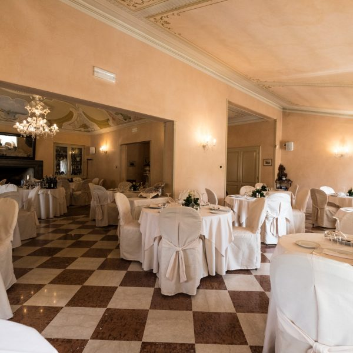
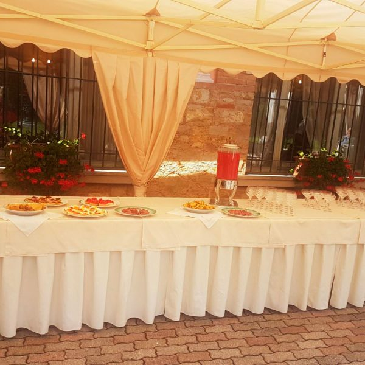
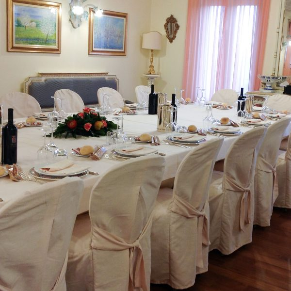
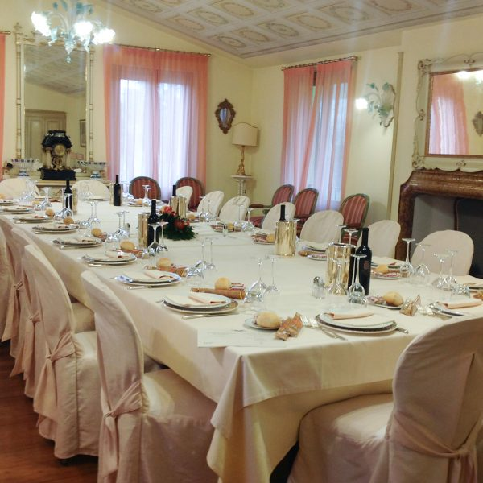
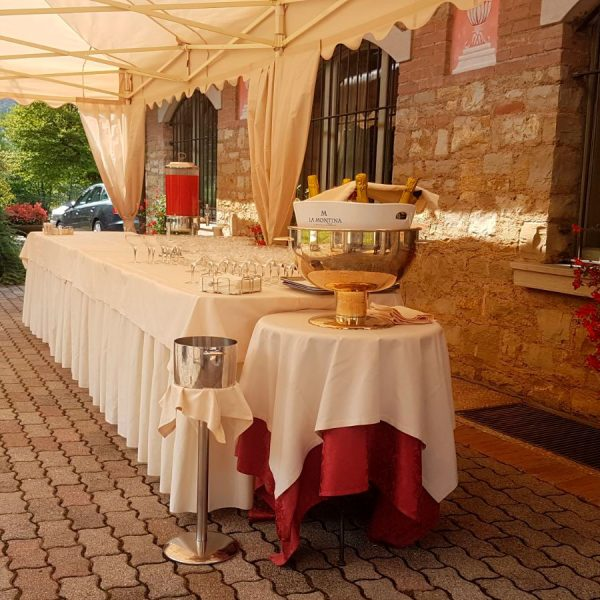
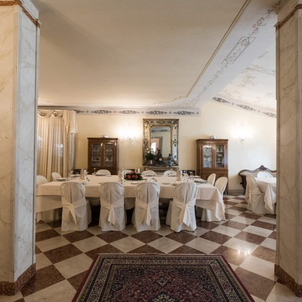
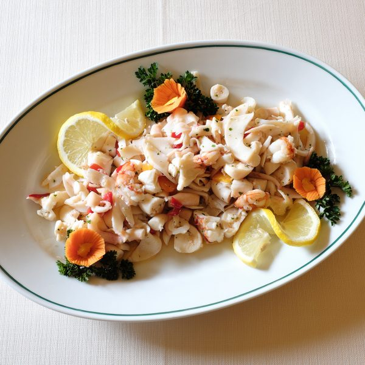

Cerimonie ed eventi
in Franciacorta
Spazi e ospitalità per stare insieme, in un contesto elegante e raccolto.
Ogni occasione merita la giusta atmosfera.
Battesimi, comunioni, cresime, anniversari e incontri aziendali trovano a Villa Carpino un ambiente accogliente e curato.
Richiedi disponibilità ↗
Le ricorrenze da condividere.
Le sale della villa possono fare da cornice ai momenti importanti, con soluzioni da definire insieme in base all’occasione e al numero di invitati.

Battesimi e comunioni
Una giornata da condividere con la famiglia, in ambienti accoglienti.

Cresime
Un'occasione importante da vivere con i propri cari.

Anniversari e feste
Spazi e proposte da concordare per celebrare una ricorrenza.

Un luogo riservato per incontri ed eventi aziendali.
La Sala del Lino è presentata nei materiali storici come ambiente adatto a riunioni ed eventi che richiedono tranquillità e riservatezza.
Per organizzare un incontro è possibile valutare direttamente con la struttura spazi, disponibilità e servizi necessari.
L'immagine è indicativa: da verificare la corrispondenza con la Sala del Lino.
Proposte gastronomiche per il tuo evento.
Nel sito storico erano presenti esempi di menu per battesimi, comunioni, cresime e anniversari. Per proposte e disponibilità attuali è preferibile una richiesta personalizzata.
Richiedi una proposta ↗
Organizziamo il tuo evento.
Indica data, tipologia di evento, numero indicativo di ospiti ed eventuali esigenze: il team potrà valutare la richiesta.
Quali occasioni si possono organizzare?
Villa Carpino riceve richieste per battesimi, comunioni, cresime, anniversari e incontri aziendali. Spazi e possibilità vanno concordati con la struttura.
Come posso verificare la disponibilità?
Contatta il ristorante indicando data, tipologia di evento e numero indicativo di ospiti: il team potrà verificare le possibilità.
Sono previsti menu per le cerimonie?
Nei materiali storici erano presenti esempi di menu. Per conoscere le proposte attuali è necessario richiedere informazioni direttamente alla struttura.
Posso segnalare esigenze particolari?
Sì, descrivile durante la richiesta: il team potrà valutarle insieme alle caratteristiche dell'evento.